Hitch
Project overview
Design problem
The aim of the project is to develop a car sharing service that will allow users to place their cars on the market and allow consumers to rent their cars for the advertised price. The project aims to alleviate the high cost of renting cars from car rental companies and offers an alternative option that will also allow those who have a car but seldom use it, to make a profit. The main objectives that the project team will attempt to meet are to produce a car sharing platform that has a well designed UI, suitable functionality for the users to use as well as an efficient and rigid product to ensure the customer can enjoy a speedy service that is available all the time. Maintainability of the system is also important to make sure that the system will be easily updatable without massively changing core system components that might affect how the system functions as well as introducing bugs. Hitch is an innovative idea that stems from very successful platforms such as Uber, a taxi ordering mobile application or AirBnb, a house rental web application. Our team was inspired by their innovative design to help the global population to efficiently provide to their target audience. As Hitch is a platform that is similar to a car rental company, it will be widely popular to tourists and adventurous people that like road tripping without the worries of damaging their car. A key factor to sponsor Hitch is due to the fact that covid has prevented traveling in many states thus once the pandemic crisis are over people will be looking for traveling opportunities, where the demand for a travel car would be inconceivable. Thus, Hitch would come into place to resolve their problem. Furthermore, Hitch will be designed with the mindset of potential growth and become mainstream in a global market.
Design approach
The group will be delivering the project following Agile and Scrum methodology. This methodology encompasses teams to learn through experience, reflect and make continuous improvements. Which for us students is the most important aspect as any skills we can pick up will be a great asset in our careers as a developer.
Team
The project consisted of a team of 5 members:
- - One member focused on frontend designed
- - Three members were assigned backend role
- - One member was assigned to unit testing
Role
I was appointed project leader and scrum master for this project. My task consisted of overseeing the team’s progress and planning accordingly to ensure our project met the deadline. Furthermore, maintaining sprint documents, recording meeting minutes and discussing our progress with our client. I was also part of the backend development team, my main role was to implement cloud services from amazon web service to our project.
Tools
- - Trello
- - Github
- - Google drive
- - Amazon web service
- - Digital ocean
- - MySQL
Stakeholders and end user
The team determined the project's stakeholder and end user before the development of the project. As we found it crucial to understand our target audience to achieve a user-centered design project. As our project is a car sharing service targeting the tourism demographic, it was required for the application to have a secured payment system and a gps location service functionality.
User stories
As this project follows agile methodology, we created user stories to aid in the development of our project. We created a trello board to add our product backlog and sprint backlog. It was beneficial for the group to create user stories before the development phase as it painted the picture on what functionality we are creating. Furthermore, as this project was under a limited time constraint, by prioritising user stories with higher difficulty we were able to avoid wasting time and failing to meet the deadline.
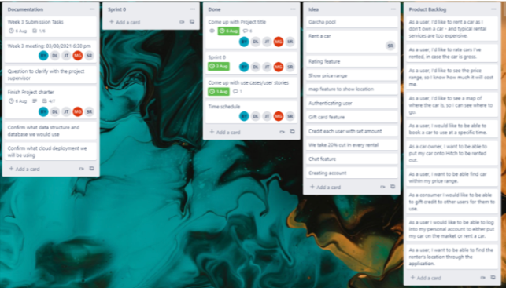System architecture
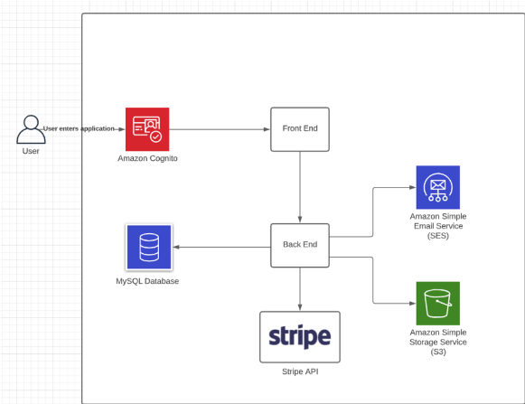User flow [Task flow]
A user flow, specifically the task flow was created to depict how a single task is performed by the user. This allows the team to visualise the process of how the user interacts with our functionality. This also ensures our functionality is implemented fully by cross checking with our diagram to see if the task flow matches.
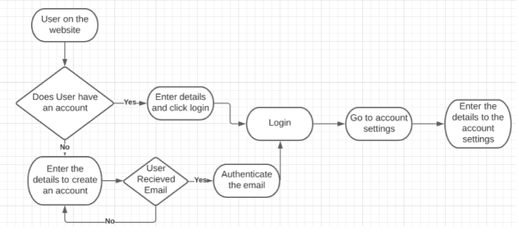Figure 1.1 Create a user/ login
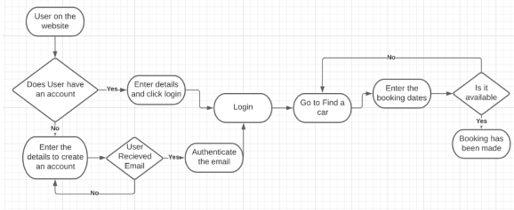Figure 1.2 Add a car
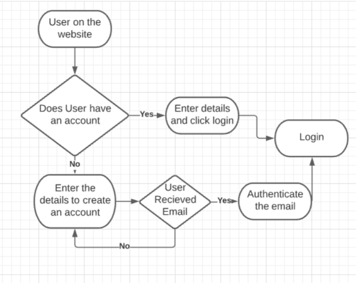Figure 1.3 Make a booking
Entity relationship diagram
Our team created an entity relationship diagram to provide a visual representation of our data objects. This diagram aided us in converting our model into a hierarchical data within the database.
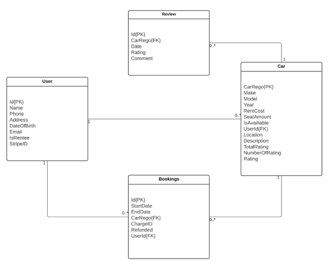User acceptance test
User acceptance test was written to help improve our software quality. Furthermore, it is a fast and cheap way to test the usability and functionality of our project, allowing us to discover issues early on. On the other hand it can also provide feedback on additional improvement to our software.
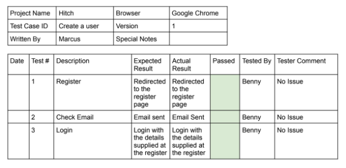Wireframe
Wireframe was generated for our functionality for this project before implementation, to provide a clear visual structure of our project. What’s more it clarifies the features of the interface, to provide a better usability experience and help refine our design process.
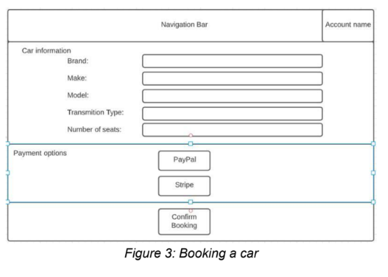Figure 2.1 Booking a car
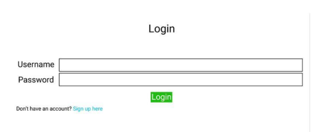Figure 2.2 Login page
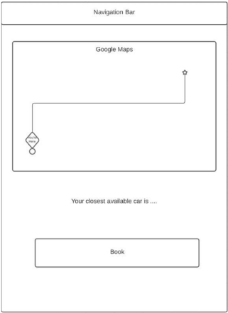Figure 2.3 Closest available car (map feature)
Final
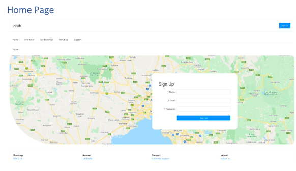Figure 3.1 Hitch home page
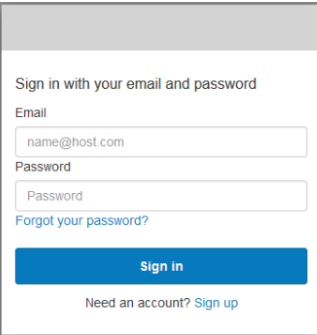Figure 3.2 Hitch log in page
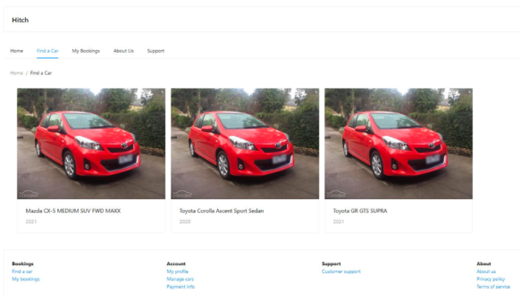Figure 3.3 Search for an available car
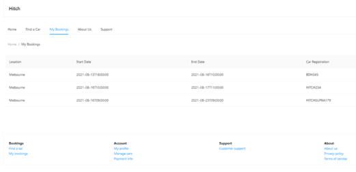Figure 3.4 View upcoming booking
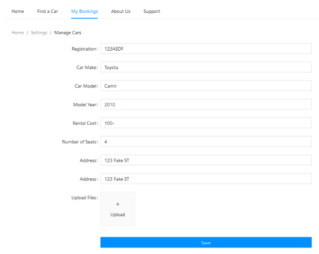Figure 3.5 Register a car
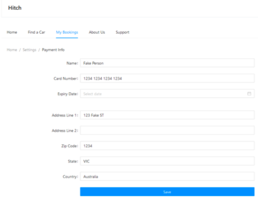Figure 3.6 Binding payment information
Reflection
What went well
- - Continuous contribution to the project until completion
- - Frequent team meeting and discussion with the client
- - Any issues raised was quickly resolved
- - Documentation was kept up to date
What could have been improved
- - During the early stages the team struggle to stay organised as we would often forget our task
- - Due to the different skills and experience we had many misunderstandings during discussions
- - Added more workload and give out a even amount of workload to the team